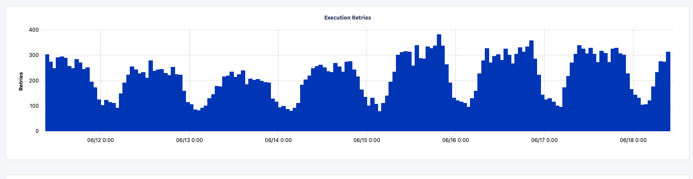
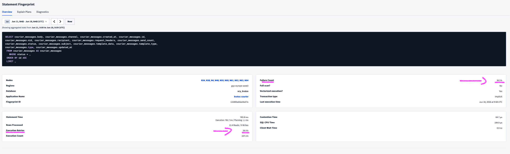
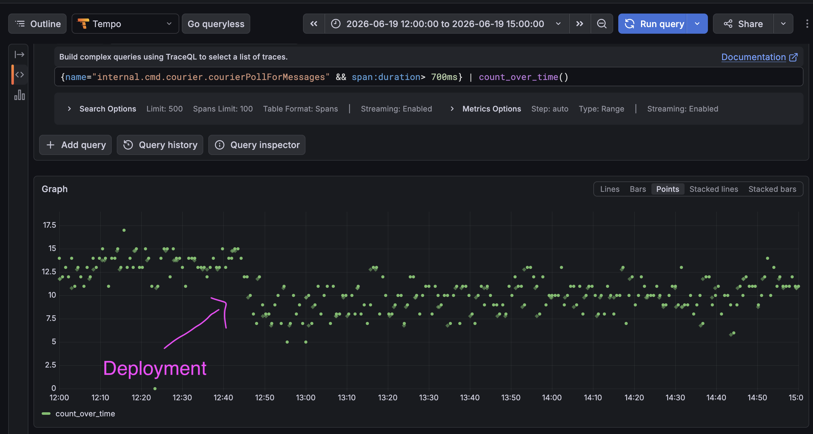
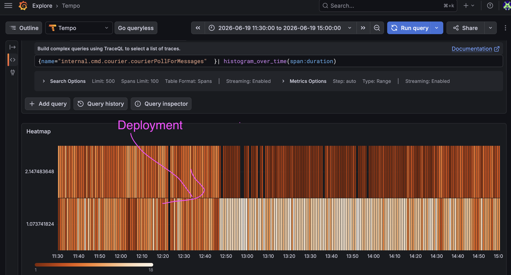

Philippe Gaultier
Philippe Gaultier
Philippe Gaultier
Philippe Gaultier
Published on 2026-07-02. Last modified on 2026-07-02.
Today, this is the story of a failed optimization. Or rather, an optimization that did not have as big an impact as expected. I think it's important to also tell these tales and not present an unrealistic, rosy view of optimization advantures. Sometimes, they don't quite work as you hoped.
In the last part, we optimized listing all messages in the table of messages courier_messages. This is a big table with millions of rows and a lot of churns: this is where all SMS or emails notifications are stored before being sent. It is essentially a work queue. And there is one problem: way too many retries to get the next messages to work on:

Worse: the failure count is identical to the number of retries:

In CockroachDB, the default number of retries for a transaction is 50, after which an error is returned. So we retry to the fullest, and to no avail. This also means that the tail latencies (p95, p99) are really inflated.
All other metrics look fine. Weird. Time to investigate.
As always, the code is open-source.
As mentioned, this table acts as a work queue. The simplified schema is:
SqlCREATE TABLE public.courier_messages ( id UUID NOT NULL, status INT8 NOT NULL -- [...] );
And new messages are added with the status queued.
So to get the next batch of messages to deliver, the query does:
SqlSELECT * FROM courier_messages WHERE status = 'queued' ORDER BY id ASC LIMIT 100
I do not remember what the exact limit is, but it's something like that. And then when messages are delivered, their status is set to sent (on success), processing (on failure, to retry later), or abandoned (after too many retries).
It's pretty simple, and from the plan and metrics, we notice that the correct index is used.
So why so many retries?
The code is very short and simply runs this query in a loop (and then handles the messages).
From the previous Investigations, we remember two important points for CockroachDB:
SERIALIZABLE, the strictestThe error from the retries is:
PlaintextError Code: 40001 Error Message: TransactionRetryWithProtoRefreshError: ReadWithinUncertaintyIntervalError: read at time 1781712863.936725360,0 encountered previous write with future timestamp 1781712863.957518522,0 within uncertainty interval t <= (local=1781712864.036725360,0, global=1781712864.036725360,0); observed timestamps: [{25 1781712864.055700939,0} {62 1781712864.179153461,0} {63 1781712863.936725360,0}]: "sql txn" meta={id=920488bd key=/Min iso=Serializable pri=0.00655660 epo=0 ts=1781712863.936725360,0 min=1781712863.936725360,0 seq=0} lock=false stat=PENDING rts=1781712863.936725360,0 gul=1781712864.036725360,0 obs={n25@1781712864.055700939,0 n62@1781712864.179153461,0 n63@1781712863.936725360,0}
Let's unpack it:
TransactionRetryWithProtoRefreshError: The database instructed us to retryReadWithinUncertaintyIntervalError: read [...] encountered previous write: This means that we have a read-write contention scenario, where our query tries to read the messages, but another part of the code wrote to these What is the difference between 'wrote to these rows' and 'wrote to this scanned range'? Well, let's put ourselves in the database shoes. There is this big table, and we want to read rows from it with only one criteria: status = 'queued'. Yes, the query has a LIMIT but it gets applied at the very end (you can see that with the plan) so for contention purposes, it does not count at all: it only truncates the result set to 100 items.
Our query uses the index (status ASC, id ASC). So the 'scan range' is: all messages in the 'queued' status.
And you know what counts as a write in this table and is part of this scan range? An INSERT! Yes that's right: new messages are enqueued all the time, concurrently, using INSERT, and with the status 'queued'. These count as a write, and they contend with our query, because technically, the current list of queued messages is constantly changing, so we need to constantly retry! That's also completely unneeded: we do not need the exact, most recent list of queued messages, we only need 100 arbitrary 'queued' messages.
Since there are other components that read these rows, e.g. the search API, we can indeed have contention and our worker is forced to retry.
Importantly: there is only one worker instance, globally. So we do not have any concurrent writes (write-write scenario), only read-writes. But that's frustrating: we want to be able to process as many messages as possible, and we are constantly retrying for no good reason.
We remember a crucial quote from the docs:
Whereas SERIALIZABLE isolation guarantees data correctness by placing transactions into a serializable ordering, READ COMMITTED isolation permits some concurrency anomalies in exchange for minimizing transaction aborts, retries, and blocking.
So, can we live with these concurrency anomalies? Let's see:
Ok, so let's do it:
SqlBEGIN TRANSACTION ISOLATION LEVEL READ COMMITTED; SELECT * FROM courier_messages WHERE status = 'queued' ORDER BY id ASC LIMIT 100 COMMIT;
Simple fix. Before, an implicit transaction was used (with the default isolation leven SERIALIZABLE), now we use an explicit READ COMMITTED transaction.
Slow values (> 700 ms query latency) have become rarer (~15/s to ~10/s):

Slow (> 1s) latencies have become rarer, and less slow (< 1s) latencies have become more frequent (unfortunately these buckets are very coarse):

It's not the optimization of the century, but it's a bit better.
The big issue that creates contention and retries is the scan range: it is huge, due to the big table and the search criteria WHERE status = 'queued' that accidentally encompasses newly inserted rows.
The better fix is to reduce the scan range: I believe that adding to the WHERE clause more precise criteria to exclude these new rows would go a long way, for example: WHERE status - 'queued' AND created_at < now() - 1 second.
Reflecting on this investigation and somewhat failed optimization, I think where I failed is: I did not fully understand where the concurrent writes came from (i.e.: INSERT), and that the scan range is the what matters for contention, not the returned rows. Well, I'll try to deploy this WHERE created_at < now() - 1 second additional optimization and follow up with another post.
If you enjoy what you're reading, you want to support me, and can afford it: Support me. That allows me to write more cool articles!
This blog is open-source! If you find a problem, please open a Github issue. The content of this blog as well as the code snippets are under the BSD-3 License which I also usually use for all my personal projects. It's basically free for every use but you have to mention me as the original author.
My views are my own and not those of my employer.